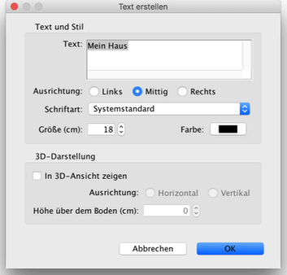

|
|
Hinzuf�gen von Texten | ||
|
Um freie Texte im Wohnungsplan hinzuzuf�gen, m�ssen Sie zun�chst Plan > Text erstellen ausw�hlen. Alternativ k�nnen Sie auch das Text erstellen-Werkzeug aktivieren.
Um einen neuen Text einzuf�gen, klicken Sie die gew�nschte Position im Wohnungsplan an und geben Sie anschlie�end die Beschriftung in dem Dialog ein, der wie unten angezeigt erscheint.
 Wurde ein Text erstellt, dann k�nnen Sie seine Gr��e und seinen Stil �ber die Men�eintr�ge im Untermen� von Plan > Schriftart �ndern… anpassen. Sie k�nnen den Text, die Schriftart, die Farbe und die 3D-Darstellung auch �ber den Men�eintrag Plan > Text editieren… konfigurieren. Durch Ausw�hlen der Option In 3D-Ansicht zeigen im Bearbeitungsfenster wird der Text auch in der 3D-Ansicht dargestellt, entweder horizontal oder vertikal ausgerichtet.
Um mit dem Hinzuf�gen von Texten aufzuh�ren, w�hlen Sie Plan > Ausw�hlen oder aktivieren Sie das Ausw�hlen-Werkzeug (oder ein beliebiges anderes Werkzeug).
Im Auswahlmodus k�nnen Sie einen ausgew�hlten Text rotieren. Sie k�nnen ihn auch doppelt anklicken, um den Bearbeitungsdialog anzuzeigen. |
|